An idea is only the beginning
You have probably heard someone say "I have a good idea for starting a new venture." Other people would like to become entrepreneurs but cannot find the right idea. So what is a good idea, and is every good idea good enough to start a business on?

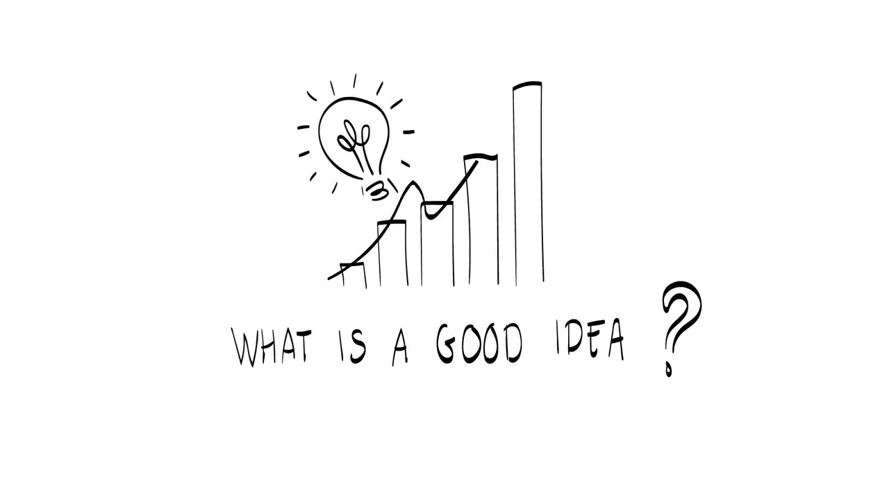
Everyone can have ideas. Ideas are free and can last very long. Having one is just the beginning, though. An idea may be close to an entrepreneurial opportunity, and it can still take a long time before it becomes one.
Take a hotel on Mars. It may be a great idea and many people have had it. As of now it is technically not feasible and nobody knows what it would cost. A lot of work remains: technology for travelling to Mars, landing and staying there, psychological studies of how people react to the travel time, and market development. Maybe we should count on teleportation to get there more instantly and skip some of the technical difficulties. The example is extreme, but it shows that ideas are free and can last forever.

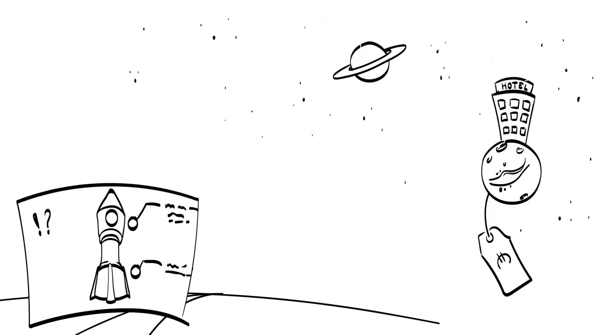
Opportunities do not last
Now assume Elon Musk and SpaceX make good progress and travelling to Mars and staying there becomes possible. More people will want the experience. More competitors will enter the market and offer travel and a stay. People then have more options to choose from, and the price of a night in a hotel on Mars will probably drop.

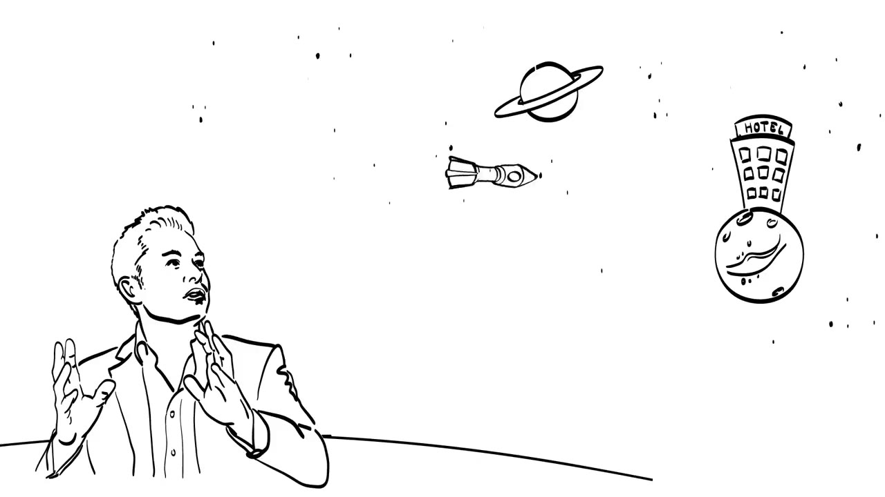

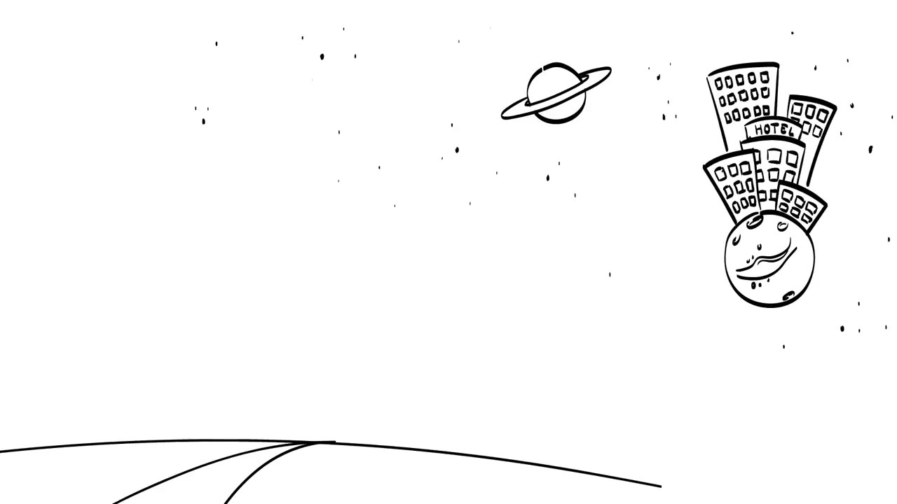
The attractiveness of the opportunity decreases. Compared to ideas, entrepreneurial opportunities are temporal. They do not last forever.
What an opportunity needs
The Mars example shows the elements that set an entrepreneurial opportunity apart from an idea.
- It needs customers who are willing to pay for it, so it has to have a certain value.
- It needs work to develop that value. As a result it is not free. It is open only to those who have the specific knowledge and the means to deliver the value.
- It is temporal. It exists only as long as that specific knowledge is not shared with competitors and customers.

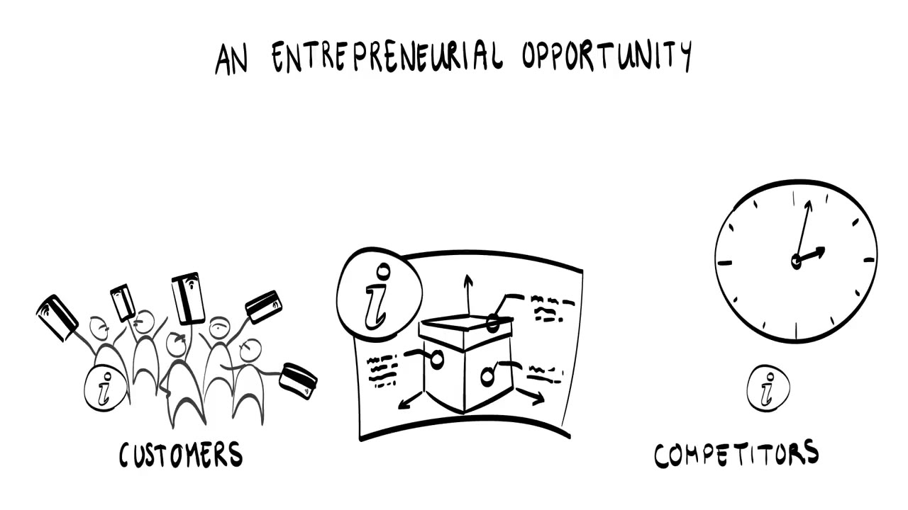
Information asymmetry
The third element has a name. The lecture speaks of the importance of maintaining an information asymmetry. The asymmetry masks two things: the specific knowledge by which the value is delivered, and what it costs to deliver that value.

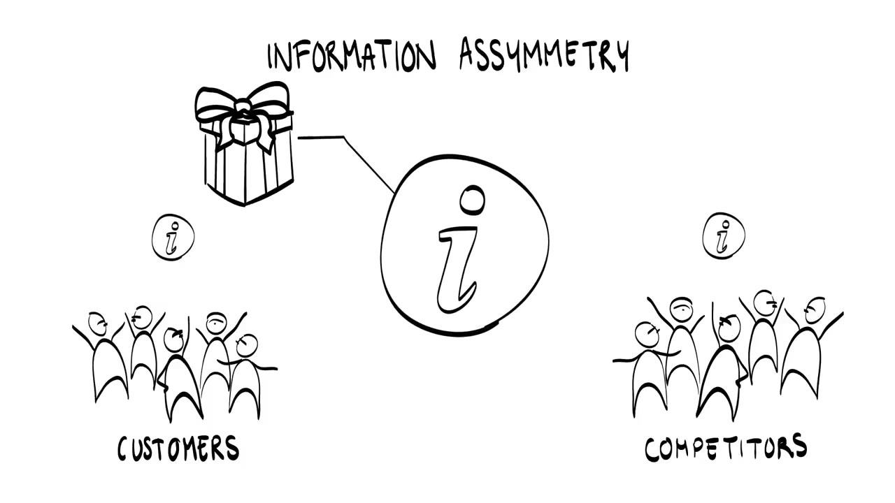
Suppose there is no asymmetry, and customers and competitors have the same information you have about how to develop and deliver the opportunity. Customers know how much it costs you to produce, so they can negotiate the price. Competitors know how to deliver the same product or service. Either way the opportunity becomes less interesting if you cannot protect the elements that deliver the value.

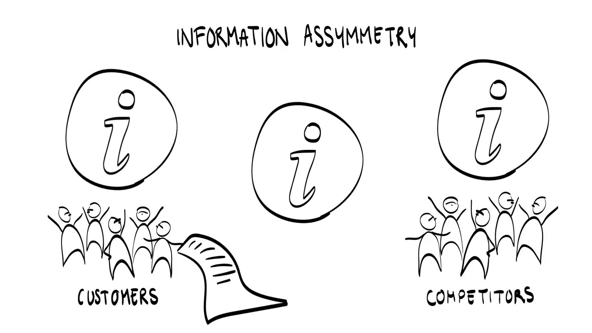
Where good ideas come from
Lecture 1 said that entrepreneurial ideas can come from your experience. For technology-based startups this matters in a specific way: expert knowledge gives you the information asymmetry you need. You can offer something that others do not understand or do not know enough about, and so cannot offer themselves.

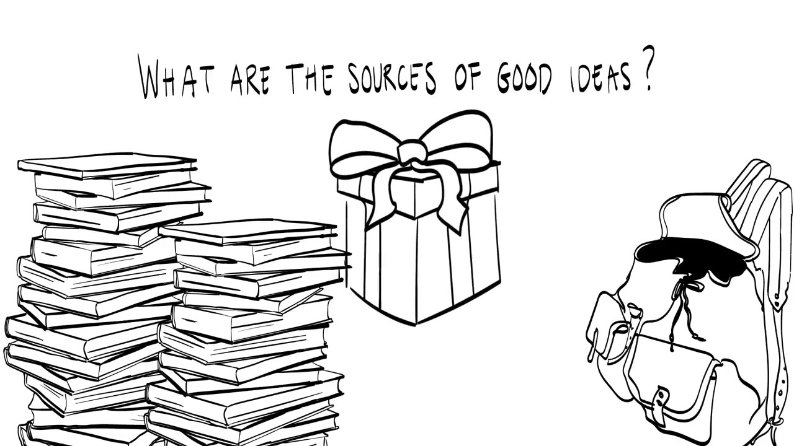
The offer still has to be of value to your target customers. To work that out, the lecture uses the value proposition canvas.
The customer's jobs, pains and gains
Your specific knowledge, your offer, only has value when it helps customers get things done in their life. These activities can be personal, functional or economic. People do them to solve a problem, to perform a task or to meet a desire. While doing them they meet pains, things they do not like and try to avoid, and they hope for gains, which are positive outcomes.
Pains
Pains are often the problems a customer has with the existing alternatives: undesired costs, inflexibility, uncomfortable use. A product may be unreliable, not completely safe, or incompatible with other devices or activities. Sometimes a pain is clear and the customer can put it into words easily. Other customers take their pains for granted, or have no sense at all that things could be done better.

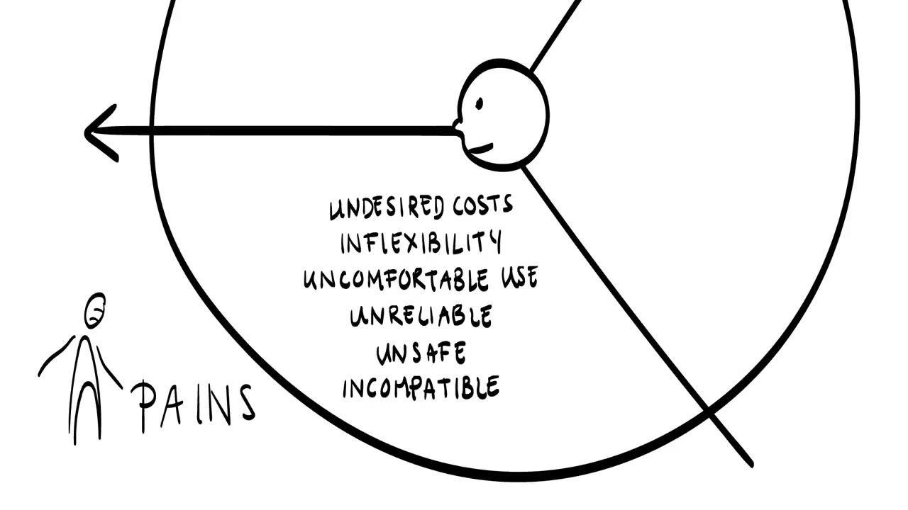
Gains and the customer business case
Gains are related to pains. Once a pain is solved it can become a gain. Gains can stretch further than that, and to understand them fully it helps to develop a customer business case. A customer business case describes how customers save money with your offer. Because of it they can do things quicker, simpler, more reliably or more conveniently. The next question is how those gains show up as revenue for the customer.
In a business-to-business market your offer helps your customers serve their own customers better, or earn higher returns on what they sell. In consumer markets the benefits should outweigh the cost of acquiring the offer. You need to understand what is at stake for the customer, because that determines the market value of your offer.

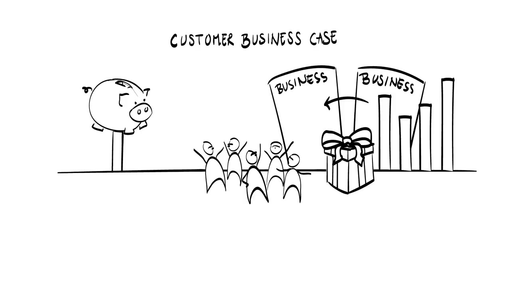
Gain creators and pain relievers
The second step in the value proposition canvas looks at your side. You identify the elements of your offer that either create a gain or relieve a pain. To do that, list all the elements and features of your product or service.

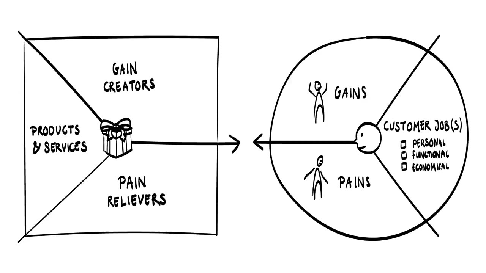
Talking to customers: the empathy map
You cannot find the value of your proposition in the eyes of the customer without contacting customers. The empathy map is a tool for getting a deeper understanding of them. Talking to a customer shows you what problems they have and whether they have accepted those problems as they are. It gives insight into how the customer thinks, acts and works. The lecture asks:
- What is driving this person?
- What does the customer say or do in situations related to your offer?
- Which obstacles or challenges does he or she face? These reflect the pains.
- Which hopes would make him or her consider your offer a success? These reflect the gains.

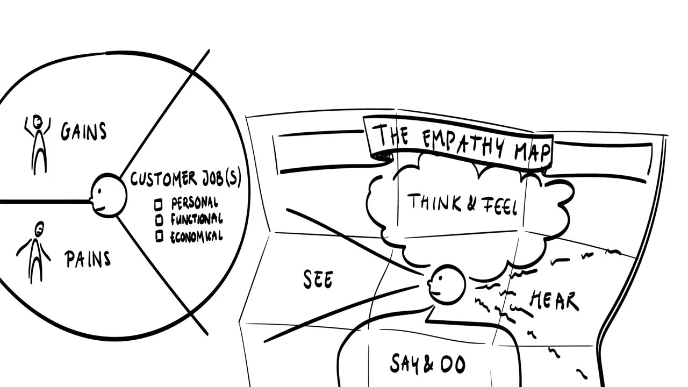
Understanding your customer takes curiosity. You have to explain your offer well, be proactive in contacting people, ask deeper questions and listen carefully. You are trying to learn how the customer does the job, how the customer thinks about using your offer, and how willing the customer is to change the way things are done today.
Keep in mind that people are often reluctant to change. Change carries unknowns and risks, and so it costs time and money. It asks for a learning attitude on the customer's part, and that raises the cost for the customer.
Customer segments
When you contact potential customers you will see that they differ. They face different problems and value different elements of your offer. What you are doing at that point is identifying distinct customer segments, each with its own application, use and benefits.

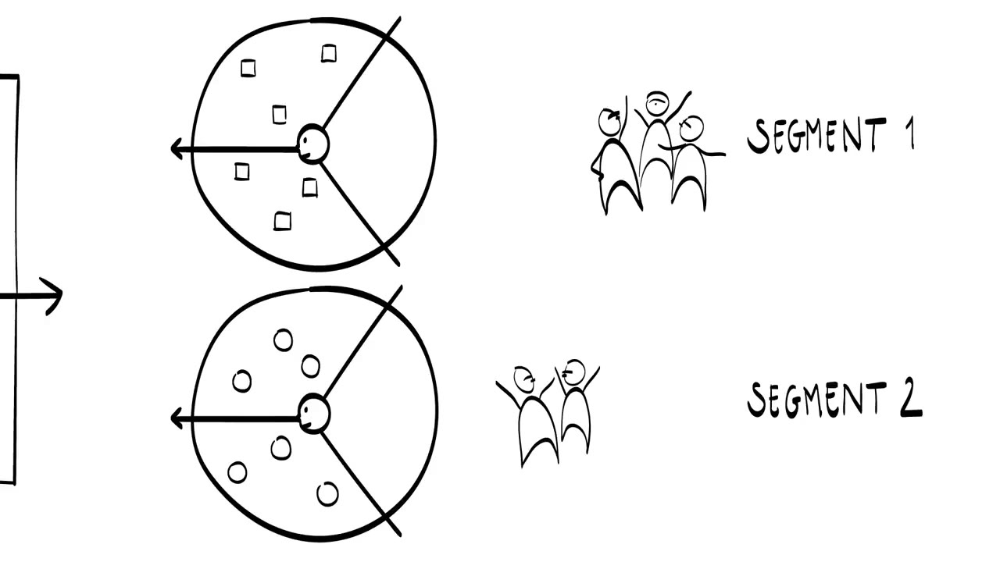
For each segment, link your gain creators and pain relievers to that segment's gains and pains. Using a different color per segment keeps the links apart. To decide which segment is the most attractive one to start with, work out its characteristics:
- the total size of the market and the share of it that you may be able to serve,
- the alternatives, and the competitors that provide them,
- which elements of the value proposition those competitors provide and how customers value them,
- how your offer performs on each value driver compared to the competitors,
- whether customers need something else before they get the full functionality from your offer.

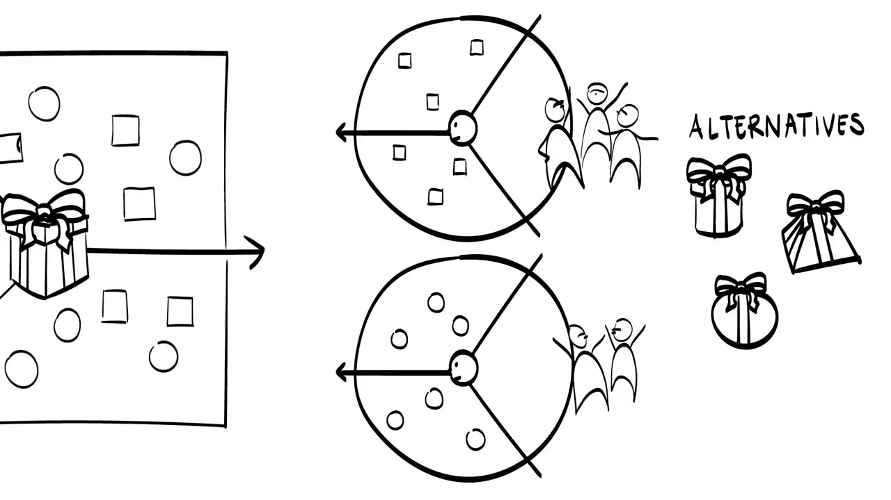
Check your assumptions
Developing the value proposition is not a straight line. You have to go through it several times. You begin with assumptions and check them with customers. The evidence gives you insights, and those bring out new assumptions. Each round teaches you more about your customers, and the solution becomes more aligned with what they need.

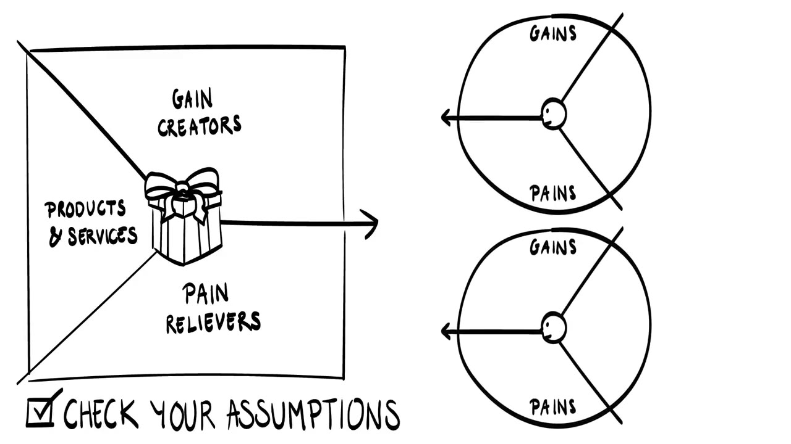
Terms to know
- Idea
- Something everyone can have. Ideas are free and can last forever.
- Entrepreneurial opportunity
- An idea with customers willing to pay for it, value that took work to develop, and specific knowledge that others lack. Unlike an idea it is temporal.
- Information asymmetry
- You know something that customers and competitors do not: how the value is delivered and what delivering it costs. The opportunity exists only as long as this lasts.
- Value proposition canvas
- A tool that sets the customer's jobs, pains and gains against the gain creators and pain relievers in your offer.
- Customer jobs
- The things customers try to get done, whether personal, functional or economic: solving a problem, performing a task or meeting a desire.
- Pains
- What customers dislike and try to avoid while doing those things, often the problems of existing alternatives.
- Gains
- The positive outcomes customers hope for. A solved pain can become a gain.
- Customer business case
- A description of how customers save money with your offer.
- Gain creators and pain relievers
- The elements and features of your product or service that create a gain or relieve a pain.
- Empathy map
- A tool for understanding a customer more deeply by looking at how he or she thinks, acts and works.
- Customer segment
- A distinct group of customers with its own application, use and benefits.